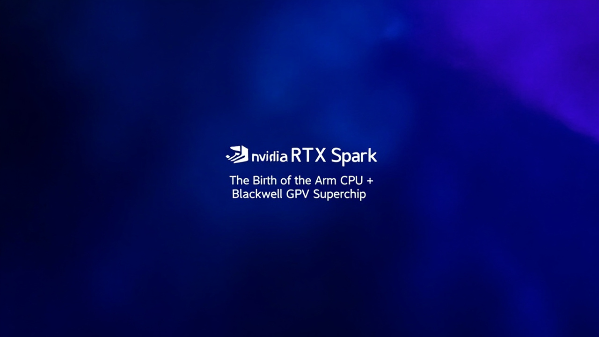

Computex 2026 重磅發布：20 核心 Arm CPU + 6144 CUDA GPU，128GB 統一記憶體，目標 Apple Silicon

Nvidia 與聯發科合作開發，10 個 Cortex-X925 高效能核心 + 10 個 Cortex-A725 中型核心
6,144 CUDA 核心，效能與桌面版 RTX 5070 相同，超越流動版 RTX 5070
可本地運行 1200 億參數 AI 模型，支援複雜 AI 推論任務
LPDDR5X 統一記憶體架構，頻寬可達 300 GB/s，消除 CPU-GPU 傳輸瓶頸
Nvidia 在 Computex 2026 正式發布旗下首款專為 Windows PC 設計的 Arm 架構超級晶片 RTX Spark。這款晶片整合了 20 核心 Grace CPU 與 Blackwell RTX GPU，支援高達 128GB 統一記憶體，定位直指 Apple Silicon 及 Qualcomm Snapdragon X 系列，不僅是 Nvidia 進軍個人電腦市場的重大策略，更是 Windows on Arm 生態系的重要里程碑。
RTX Spark 是 Nvidia 針對 Windows PC 市場開發的 Arm 架構處理器，過往代號為「N1X」。這款晶片实际上是去年底發布的 DGX Spark 開發工作站晶片的消費版本，採用 TSMC 3nm 製程將 CPU、GPU、NPU 及記憶體整合於單一封裝中。
與傳統 x86 架構不同，RTX Spark 基於 Arm 架構設計，意味著它與 Apple M5 系列、Qualcomm Snapdragon X 系列屬於同類產品，瞄準輕薄高效能的筆電市場。
| 規格 | RTX Spark（最終版） | RTX 5070（桌面版） | RTX 5070（流動版） |
|---|---|---|---|
| CPU 架構 | 20 核 Grace（Arm） | x86 | x86 |
| GPU 核心 | 6,144 CUDA | 6,144 CUDA | 4,608 CUDA |
| AI 算力 | 1 PetaFLOP | N/A | N/A |
| 統一記憶體 | 128GB LPDDR5X | N/A | N/A |
| 記憶體頻寬 | 300 GB/s | N/A | N/A |
| 製程 | TSMC 3nm | TSMC 4nm | TSMC 4nm |
| 厚度 | 14mm | N/A | N/A |
| 重量 | 3 磅（約 1.36kg） | N/A | N/A |
RTX Spark 的 GPU 配備完整的 Nvidia 技術堆疊，包括 CUDA、DLSS 4.5、光線追蹤、Reflex 及 G-SYNC，全面支援 AAA 級遊戲。根據官方數據，RTX Spark 可在 1440p 解析度下輕鬆輸出超過 100fps 的流暢畫面。
在創作方面，Nvidia 宣稱 RTX Spark 可處理 12K 4:2:2 影片編輯、渲染超過 90GB 的 3D 場景，並支援本地運行 1200 億參數的大型語言模型。Adobe 已宣佈對 Photoshop 及 Premiere 進行全面架構重構，預期可帶來高達 2 倍的 AI 及圖形效能提升。
多家OEM廠商已確認將推出搭載 RTX Spark 的產品，包括 ASUS、Dell、HP、Lenovo、Microsoft Surface 及 MSI。首批筆電將提供 14 吋及 16 吋兩種尺寸，配備 OLED 顯示屏及精密加工鋁合金機身，機身厚度僅 14mm、重量約 3 磅，強調便攜性與長續航力。
作業系統方面，RTX Spark 將原生支援 Windows on Arm，微軟並已準備將 Windows 打造成「代理式 AI 作業系統」，深度整合 AI 推理能力。軟件合作夥伴還包括 Blackmagic Design、Blender、CapCut、ComfyUI 及 OTOY 等。
DGX Spark 工作站定價為 ,699 美元，而消費級 RTX Spark 筆電預計價格將更親民，但業界猜測高配版本可能落在 ,000-3,000 美元區間。考慮到記憶體與先進製程成本，RTX Spark 短期內仍屬高階市場定位。
「如果 Nvidia 想做一款筆電晶片，從來沒有任何懷疑。他們只是選擇了正確的時機。」
— 業界分析師評論💡 RTX Spark 的意義：Nvidia 首次以晶片供應商身份進入 Windows PC 市場，不僅是 Apple Silicon 的直接競爭對手，更可能重塑未來 PC 的架構標準——從傳統 x86 轉向 Arm + AI 融合的超級晶片時代。